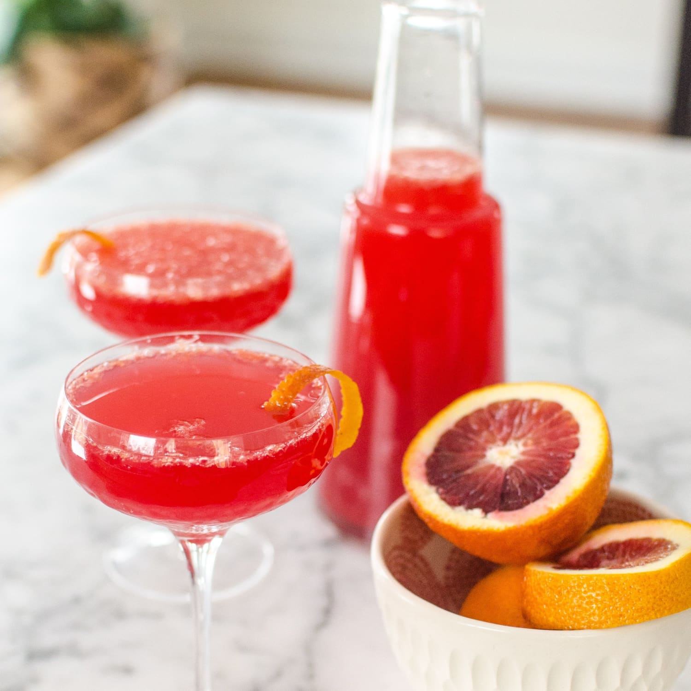

Blood Orange Mimosa

A properly made Blood Orange Mimosa
This is a great blood orange-pineapple mimosa for any lazy morning.
Ingredients
- 1/2 cup pink sanding sugar
- 1 bottle brut champagne
- 1/2 cup pineapple juice
- 1/2 cup blood orange juice
- 2 fluid ounces orange liquer
Steps
- Dip the rims of 4 champagne flutes in water. Dip into sanding sugar to coat the rims.
- Divide Champagne among the flutes.
Pour 2 tablespoons pineapple juice and 2 tablespoons blood orange juice into each.
Top mimosas with orange liquer